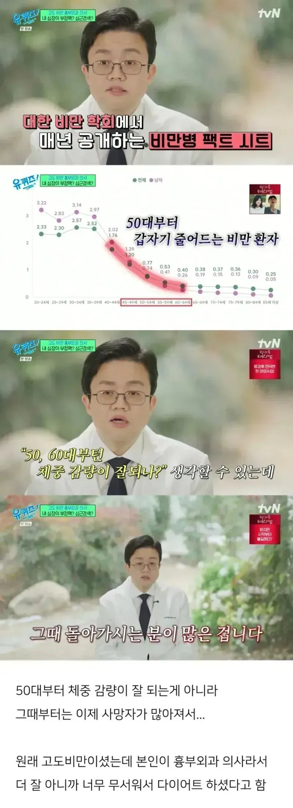

ㄷㄷㄷ

ㄷㄷㄷ
그런 얘기 하고싶으면 마운자로가 월 10만원 언더로 떨어져야 할 얘기인거같음
경각심 전달력 확실하네
건강의 변곡점이 큰 시기여서 그런듯
건강검진 받고왔더니 사내 병원에서 전문의라는 의사가 부르더라고... 갔더니, **님 사업부에서 딱 세분불렀는데 그 중 한 분이시구요, 혹시 왜 부르신지 아세요? 이래 물어보길래, 모르겠는데요, 이랬더니... 이렇게 계속 사시면 죽어요... 라고해서 살 뺌... ㅈㄴ 힘들었음


4년 동안 20kg 빼서 이제 사람임. 한 2년 전부터 건강 검진에서 정상치 찍음

시진미나미핑

ㅋㅋㅋ 지금 생활습관 조절 체중감량 혹은 약 복용 중에 아무것도 안하실거면 앞으로 검진 받으실 필요도 없어요~ 오래살려고 질병이 증상이 생기기 전에 검사하는건데, 지금 있는 질병도 관리 안하시는 분께 검진이 무슨 소용입니까..
오 생각해낸 멘트야?
약 안먹고 순수 식단으로 뺌. 오래 살려고 살뺀게 아니라 시름시름 앓다 죽기 싫어서 살뺌
ㅎㄷㄷㄷㄷ 당장 마운자로 처방!
이렇게 안살면 안죽나요?
혈압 수축기 140 쫌 넘었고, 당뇨 증상이 나올 수치인데, 젊어서 아직 안나온거라고 하더라... 이래살면 배에다 주사 꼽고 살아야된다고 협박했음
그래도 죽어요... 어케 죽는지가 다르겠죠. 평생 주사 꼽다 맛난 것도 못먹고 죽거나, 죽기 전까지 멀정하거나
이제 비만을 버텨낼 수 없는 자들은 가는구나
저 나이때 갑자기 살이 빠진다는건… 당뇨든 암이든 일단 뭔가 하나 걸린것
그 쇼츠 영상 생각나네
미국인들 살찐애들 다 죽었어 하는거
그리고 저때 당뇨걸려서 알아서 살 쭉쭉빠짐 이미 혈관, 신장은 씹창나있고
꼭 당뇨나 암이 아니어도
나이들다보면
살이 계단식으로 빠지는 시기가 있음.
계단식 노화임 ㅠ
뚱뚱한 노인은 얼마나 강한거냐
이제 마운자로 위고비 딸깍으로 빼는거 가능한데 고도비만은 좀 한심하다고 하는 반응이 있다더라